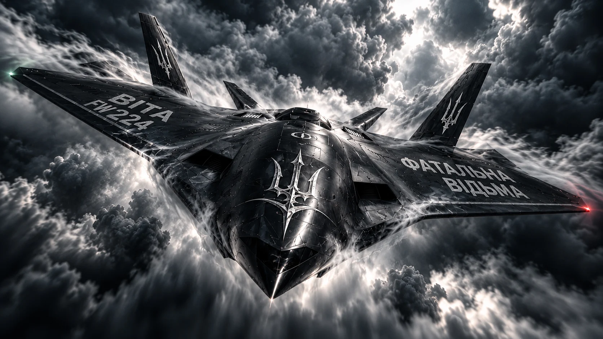
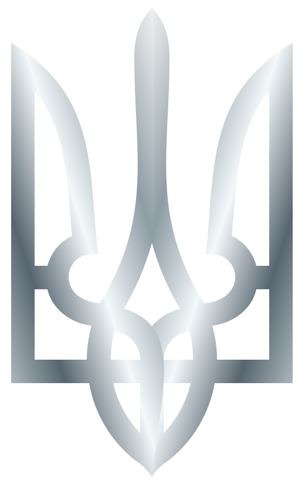
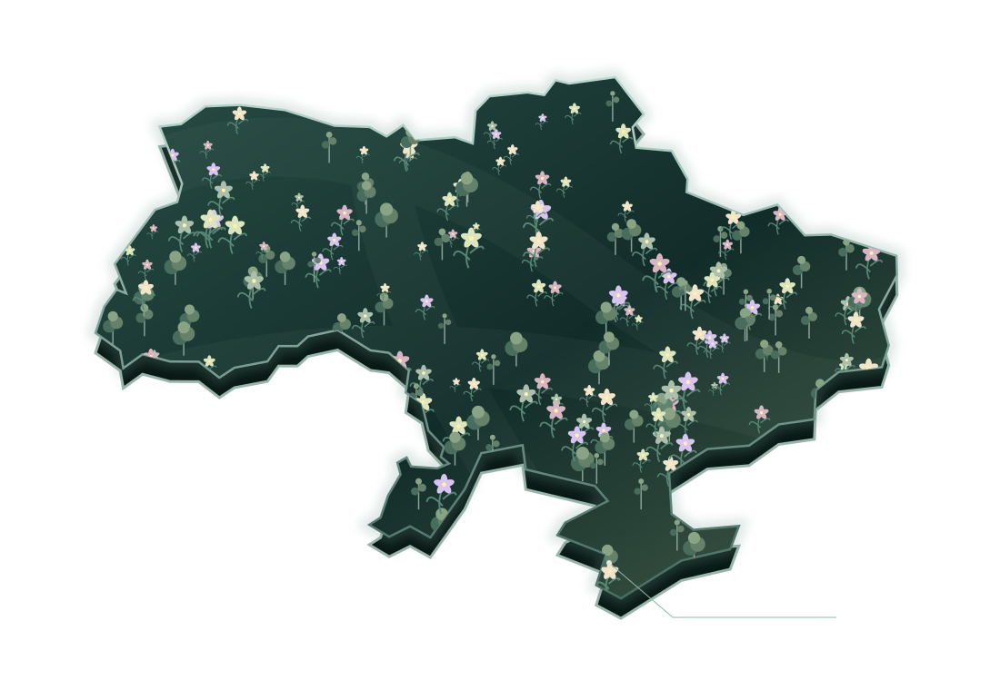

УКРАЇНА01 / ПІД МОЇМИ КРИЛАМИ
Тут має квітнути життя.Земля, якуми бережемо.
Крізь грозу — до світла. Під срібними крилами залишається місце для квітів, дерев і майбутнього.

Тільки Україна. Довкола — сірий океан.
02 / СИГНАЛ ПРИЙНЯТО
Відьма, підключись.
Коли з туману виходить механічний рій, крила стають щитом. Увійди в коротку ігрову сцену й очисти небо.
03 / ІНТЕРАКТИВНА СЦЕНА
Захисти небо.
VITA / FW224
Життя під захистом.
12 машин рою. Твоє небо. Твої крила.
04 / ЖИТТЯ ПОВЕРТАЄТЬСЯ
Залишаєтьсяквітнути.
Після грому має бути ранок. Після темряви — світло. І земля, на якій знову ростуть квіти.
05 / ГОЛОС КРІЗЬ ГРОЗУ
Фатальна Відьма
Ця пісня народилася в момент відчаю. Її звучання — напружений електророк, важкий індустріальний пульс і жіночий голос, що проривається крізь шум.
Рядки з пісні＋
Фатальна відьма виходить на бій,
і вона не одна!
ПОСЛАННЯ FW224
Сила маєкого берегти.
01Життя має право тривати.
02Свобода має право на власний простір.
03Майбутнє має право розквітнути.